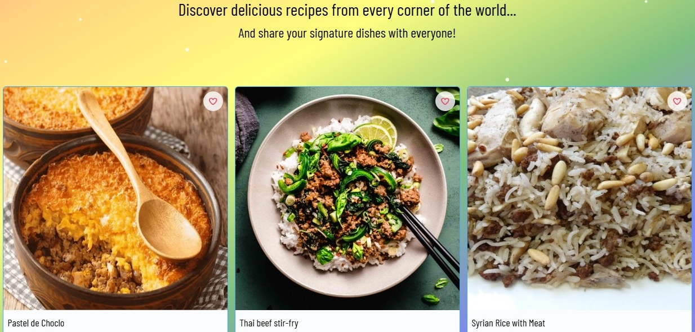

Example of a a few recipes
This is a React online recipe book group project that uses the MealDB API to find recipes from around the world.
You can create recipes, favorite recipes and rate them.
This is the first group project that we did in the frontend framwork course.
You can search for recipes by name, category, country and main ingredient